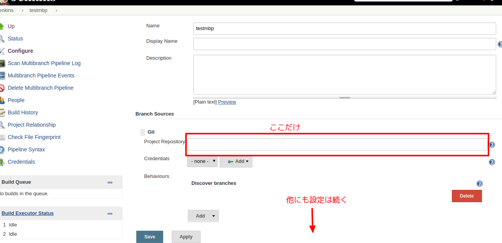

Author
ka

Website: kaosfield
Twitter: ka
GitHub: kaosf
ka
2017-10-29

Copyright (C) 2017 ka
https://kaosf.github.io/20171029-tokushimarb-slide
Repository: kaosf/20171029-tokushimarb-slide - GitHub
Dockerの方にコマンド色々書いてありますが
実験 → スライド修正 → 実験方法修正 → …
などとひたすら繰り返していたのでミスがある可能性が高いです…
100%を目指す前にまずはアップしたのであしからず…(明らかなミスとかありましたらIssueを投稿して下さればありがたいです)
Jenkinsで新規にジョブを作る際に選択できる候補の一つ
※正確にはジョブではなくアイテムかも
リポジトリに存在するJenkinsfileに反応してブランチごとにジョブを分けて作ってくれる
※Jenkinsfileというファイル名は任意に指定可能だが変える意味は無いと思う

GitリポジトリのURL
git@bitbucket.org:owner/repos.gitなどを1つ設定するだけ

必要最小限感が良い
他にも色々設定出来ることはあるがGUIでポチポチやりたくない
設定を保存するとリポジトリをスキャンし始める(既にJenkinsfileがあればビルドを始める)
Jenkinsユーザで秘密鍵と公開鍵のペアを作っておく必要がある
sudo su - jenkins
ssh-keygen
cat ~/.ssh/id_rsa.pubここで得られた公開鍵をGitHubやBitbucketのリポジトリごとの設定に存在する場所に設定する
※BitbucketならAccess keyに登録 等
もしくは何か別の方法で認証をクリアするとか…あまり色々な方法は知らない(それをまとめた発表聞きたい)
あと初回接続時は
~/.ssh/known_hostsにGitHub等のサーバ自体の公開鍵？(この辺原理をよく知らない)を登録するかどうかみたいなの聞かれるので一度だけ手動で
git clone git@bitbucket.org:owner/repos.gitしておいてプロンプトに yes と答えておく必要があったかもしれない
もしくは
~/.ssh/configに
host github.com
StrictHostKeyChecking no
host bitbucket.org
StrictHostKeyChecking noと設定してやれば大丈夫だった気がする
この辺も含めてフルオートにしたいですね
Jenkinsサーバのprovisioningするときに頑張れば出来ますが私はまだやってません
そのうちItamaeのコードスニペットでも雑に作ってGist辺りに保存しておくかも
Jenkinsのビルドを外部から起動する方法は設定の Trigger builds remotely を有効にして推測不能なtokenを設定し外部から
http://JENKINS_HOST/buildByToken/build?job=JOBNAME&token=TOKENにGETリクエストを飛ばしてやることだった
これで普通のジョブは出来ていた(他にも方法はある)
Multibranch Pipelineの設定画面にはそういうのが無い
デフォルトで Poll SCM になっていると思われる
なので出すべきGETリクエストは以下のようなものになる
http://JENKINS_HOST/git/notifyCommit?url=git@bitbucket.org:owner/repos.gitこれで勝手に更新のあったブランチを検出して動いてくれる
Scriptedな書き方とDeclarativeな書き方がある
Declarativeな書き方のほうが後から出来るようになったので世の中に散らばっているサンプルはScriptedの方が多いので困る
おおよそ次のようになる
#!groovy
pipeline {
agent any
stages {
stage('Build') {
steps {
sh 'echo "build"'
}
}
stage('Test') {
steps { sh 'echo "test"' }
post {
always { sh 'echo "finish"' }
success { sh 'echo "success"' }
failure { sh 'echo "failure"' }
}
}
stage('Deploy') {
when {
branch 'release'
}
steps { sh 'echo "deploy"' }
}
}
}sh 'command'任意のシェルスクリプトが実行出来る
これで基本的には自由になれる
archiveArtifacesアーカイブが作れる
archiveArtifaces artifacts: 'path/to/flie', fingerprint: truewithCredentials秘密の文字列をログから隠せる
KeyName というキーでSecret textを設定している場合
withCredentials([string(credentialsId: 'KeyName', variable: 'token')]) {
sh "echo $token"
}Groovyの通常の変数展開とは違う点に注意
"This is ${x}." // 通常
"This is $token // ${} ではなく $ だけにするこれで今までJenkinsの管轄下にあったジョブの設定がリポジトリ内のテキストファイルとして管理できるようになった
一般のCIサービスのようになってうれしい(TravisCIとか)
便利と言うか必須になってしまったプラグイン
Role-based Authorization Strategy
ジョブごとに権限を設定出来る
これが無いともう無理
正規表現を使って複数のジョブにまとめて同じ設定を適用することも出来る
別にブランチごとに反応しなくてもmasterだけでいい…
と思っていて普通のPipelineというものもあるのでそれを最初調べていた
がmasterだろうが何だろうがおかまいなく反応してしまった
処理を分岐しようと色々試したが上手く行かなかったので使うのをやめた
コミットコメントに
[ci skip]が含まれていればstageを全て飛ばして成功扱いにするというのをやりたいがやり方不明
Dockerのインストールは一度インストールに成功したコマンドを控えたりせずに常に公式のガイドを参考にしよう(戒め)
今はこれ
https://docs.docker.com/engine/installation/linux/docker-ce/ubuntu
Docker CEとDocker EEに分裂したがCE (Community Edition)の方を使えば良い
Linux Ubuntu 16.04 amd64の場合(現状)
sudo apt-get update
sudo apt-get install apt-transport-https ca-certificates curl software-properties-common
curl -fsSL https://download.docker.com/linux/ubuntu/gpg | sudo apt-key add -
sudo add-apt-repository \
"deb [arch=amd64] https://download.docker.com/linux/ubuntu $(lsb_release -cs) stable"
sudo apt-get update
sudo apt-get install docker-cejenkinsユーザがsudoなしでもdockerコマンドが叩けるようにsudo出来るユーザで以下を実行しておく
sudo gpasswd -a jenkins dockerこの後JenkinsなりOSなり再起動する必要があったような気がする
sudo systemctl restart jenkins.service # ?
# or
sudo shutdown -r now # ?ここを参考に
https://docs.docker.com/compose/install/#install-compose
sudo curl -L https://github.com/docker/compose/releases/download/1.16.1/docker-compose-`uname -s`-`uname -m` -o /usr/local/bin/docker-compose
sudo chmod +x /usr/local/bin/docker-composeコンテナ同士で連携するための--linkオプションが非推奨になっていたのでnetworkを作ってそれを使う
次のページで例示
docker network create mynetwork
docker run -d --rm --net mynetwork --name mydb postgres:9.6
git clone https://github.com/kaosf/20171029-tokushimarb-rails
cd 20171029-tokushimarb-rails
docker run -t --rm --net mynetwork -e DATABASE_URL=postgres://postgres:@mydb:5432/a \
-v $PWD:/app -w /app ruby:2.4.2 /bin/bash -c \
"bundle install --path vendor/bundle --without development production &&
RAILS_ENV=test bin/rails db:setup &&
RAILS_ENV=test bin/rake"これでrubyのコンテナからはホスト名 mydb でpostgresのコンテナを参照出来る
DBの名前は所詮作り捨てにするので超適当に a としている
環境変数DATABASE_URLを使えるようにconfig/database.ymlを改造しておくと良い
docker stop mydb
docker network rm mynetworkmydbの方は--rmオプションを付けていたので止めれば消える
docker-compose.ymlというファイル名で次のようなファイルを用意(リポジトリのルートに)
version: '3'
services:
db:
image: postgres:9.6
test:
image: ruby:2.4.2
volumes:
- ./:/app
environment:
DATABASE_URL: postgres://postgres:@db:5432/a
working_dir: /app
depends_on:
- db
command: |-
/bin/bash -c \
"sleep 1
bundle install --path vendor/bundle --without development production &&
RAILS_ENV=test bin/rails db:setup &&
RAILS_ENV=test bin/rake"docker-composeを使わない方の例では mydb だったものを db に変更している
※3行目のdbをmydbに変えてDATABASE_URLも変えれば同じになる
何故か
sleep 1を挟まないとDBへの接続で失敗する…
これが謎
docker-compose run testdocker-compose stop
docker-compose rm -fネットワークがdockercompose_defaultになってしまい同時に起動したときにエラーになるかも
Railsのデフォルト状態で行こうとするとJavaScriptのランタイムがありませんというエラーに遭遇するはず
Gemfileでtherubyracerがコメントアウトされていると思うので有効にしておくと良い
※jqコマンドをインストールしなくてもJSONを読み解けばいいです
docker inspect user/container | jq '.[0].RepoDigests[0]'これで出てくる文字列
user/container@sha256:0123456789abcdef0123456789abcdef0123456789abcdef0123456789abcdefを指定してpullすればいい
docker pull user/container@sha256:0123456789abcdef0123456789abcdef0123456789abcdef0123456789abcdefただしタグが付かないので自分で適当に付ければよい
そのためにはイメージIDを知っておく必要がある(docker imagesコマンドで分かる)
docker images # 調べる
docker tag user/container:myfixedversion1 0123456789ab後は普通に使えば良い
例:
docker run --rm -it user/container:myfixedversion1 /bin/bash手軽に一意な文字列が欲しい場合
cat /proc/sys/kernel/random/uuidこれでUUIDが得られるので簡単
uuidgenコマンドは無い環境もあった
上手いことネットワーク名やDB名を被らないようにするのに使えそう